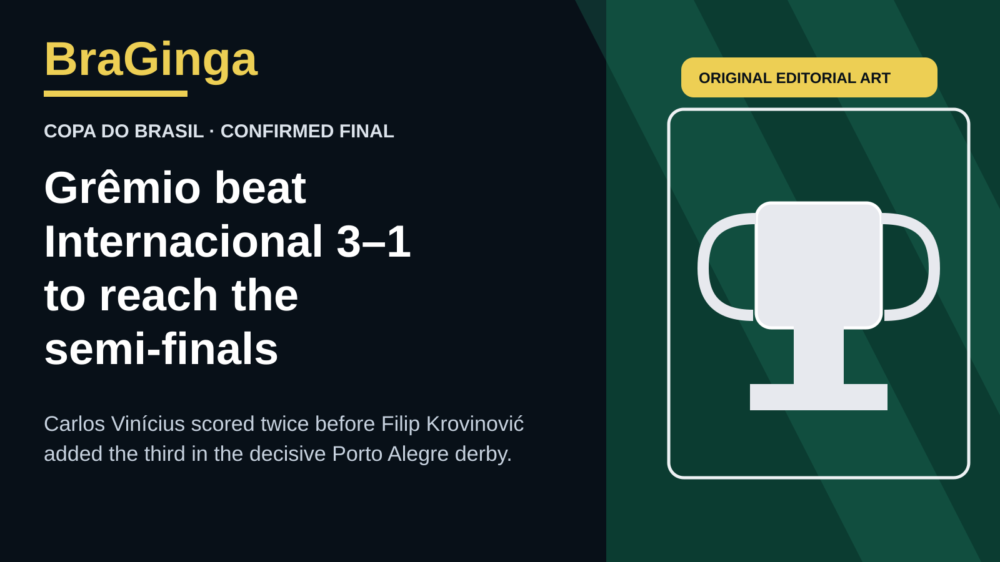

Original BraGinga editorial illustration. No third-party photo assets or club marks.
Grêmio completed the Copa do Brasil semi-final field by beating Internacional 3–1 at Arena do Grêmio on Thursday night. The first leg at Beira-Rio had finished 0–0, so the victory sent Grêmio through 3–1 on aggregate.
Carlos Vinícius scored twice in the first half, and Filip Krovinović added Grêmio’s third after the break. Vitor Hugo scored Internacional’s goal.
The result sends Grêmio into a semi-final against Atlético-MG, which eliminated Cruzeiro. The other semi-final pairs Palmeiras with Vasco.
CBF says the win gives Grêmio a 16th Copa do Brasil semi-final appearance, matching Flamengo’s competition record. More than 55,000 spectators attended the decisive derby.
Sources: CBF match report; CBF match sheet; CBF semi-final record note.